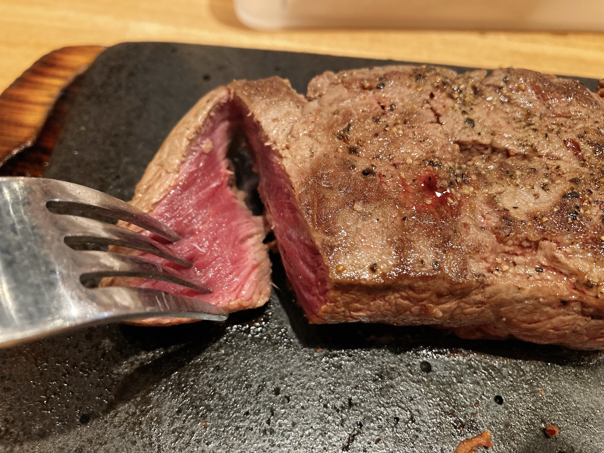
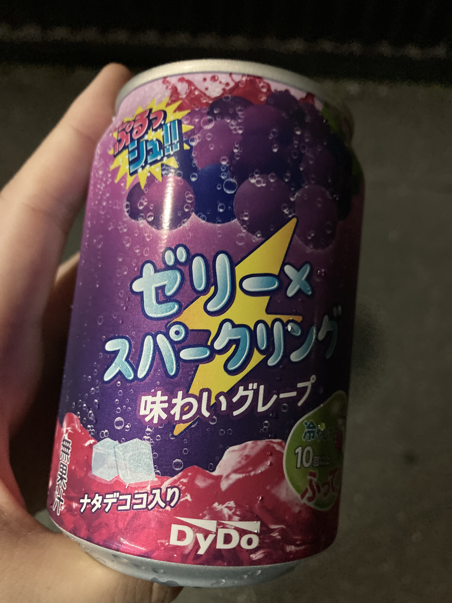

夏休みが近づきつつある
もうすぐお盆な気がしますけど。今日は2つ課題が片付いてよい日でした。重めの課題の締切日が被るのはさすが期末期間って感じする。あれ、期末期間だっけ。まあいいや。構造体まみれのCソースコードをしばきながら途中で1000程度論述*n本を生やす大学生、ちょっと頭捻って探さないとなかなか見つからないのでは？我ながら面白い履修してんなあって思いました。いつものことですね。
実は毎日書いた日記の文字数を数えてたりします。何かしら長文を生やす週間をつけると、自分がこのノリでこういう文を書いた時に大体何字って感覚が身についてレポート生成に便利という知見を得るなど。自分の場合、制限無しで気の向くまま一段落を生やすと150〜200字ちょいになります。ちょっと修飾増やして250字乗るかな？ってくらい。大体2ツイートに分けるとちょうどいい文量。本当はこういうブログって段落細かく分けたほうが読みやすいんでしょうけど、自分はこんなふうにある程度文字が固まってる方が読んでて性癖に刺さるんですよね。
ちなみにレポートだともっと文章が固いので1段落が300字近くになったりする。ここだと文章のリズムを意識して体言止めの文を増やすけれど、文末を省略できないレポートだとその分文字数が嵩む。助詞をどんどん省略するのでその影響もあるかも。ほら、こんなふうに「〜かも」で文止めたり「ほら」とか言ったりする。これがいわゆるリズムってやつ。謎のこだわり。
「ほら」とか言ったりするのは、脳内の独り言を書き下してる感覚でこの日記を生成しているからです。普段は独り言をもっと整形してから出力するんだけど、ここはなんせ制限無しなのでそのまま垂れ流し。どちらかというと喋る感覚が近い。書き言葉なのにリズムが気になるのは、脳内で音に変換して処理してるからでしょうね。
もっとも、脳内の独り言をそのまま声に出せるわけじゃないので、喋るのはかなり苦手意識があります。脳内の独り言と実際の発話って、どちらも音声寄りの処理なのでどうやら脳内で衝突するらしい。このせいで、何かを実際に喋るときは一度脳内で独り言を喋ってから復唱するか、その場で場当たり的に文章を生成して声に出すかする必要がある。いわゆる並行処理ができない。これが相当なストレス源らしい、ってことに気づいたのは最近の話1。対して、ここみたいにキーボードで文字打ってると脳内の独り言と並行して文章を生成できるのでめちゃくちゃ快適。
さて、これくらいで1000字行ったかしら？
たまたまゲーセンに行ったのでWACCA Lily R納め。
Lily Rおつかれ〜
— ₍₍⁽⁽🍳₎₎⁾⁾ (@sal_pipr) August 9, 2021
伸び1で草 pic.twitter.com/46xrfhLLjK
なんだかんだ、最初から最後までずっと遊んでたのはLily Rが初めてかな？次作はガチショタがいたりいきなりArcaeaコラボが来たり、楽しみですね。バージョンの頭文字Rで被せたの未だに許してないけど。

また肉？って感じだけど。美味い。しかも安いので肉おかわりしちゃった。イチボって部位、塊が丸い形状で弾力あるせいでまじで切りづらかった。一回鉄板から逃げかけてひやっとしたわ。
そして深夜徘徊しながら帰宅。

自販機で見つけたので飲んだ。これ、中高の最寄りの無人駅の自販に置いてあって、結構な頻度で電車待ちながら飲んでたやつ。懐かしの味。絶妙なぷるしゅわとチープなグレープ味の調和がかなりよい。他人に勧めるかって言ったらまた話は別だけど。一番飲んでたのが中3か？何年前だ……老けたな……。
-
同じ理由で手書き文字がめちゃくちゃだったりする。手の速度が追いついてくれないので。 ↩︎